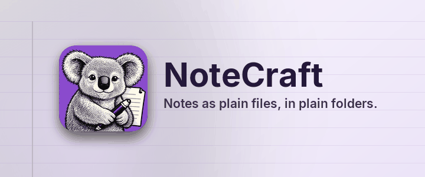

Notes as plain files, in plain folders.
NoteCraft keeps notes the way you keep files: a notebook is a folder, a section is a folder, a page is a folder with one file and its pictures inside. Nothing is locked in a database, so any folder your sync tool already watches becomes a synced notebook, and a backup is a copy.
Every page in this section shows one part of NoteCraft, on the page itself:
Click anywhere in this paragraph and type. The page saves itself about a second after you stop. Press Enter at the end of the line for a new paragraph, and Escape to leave it.
Back to the start page.